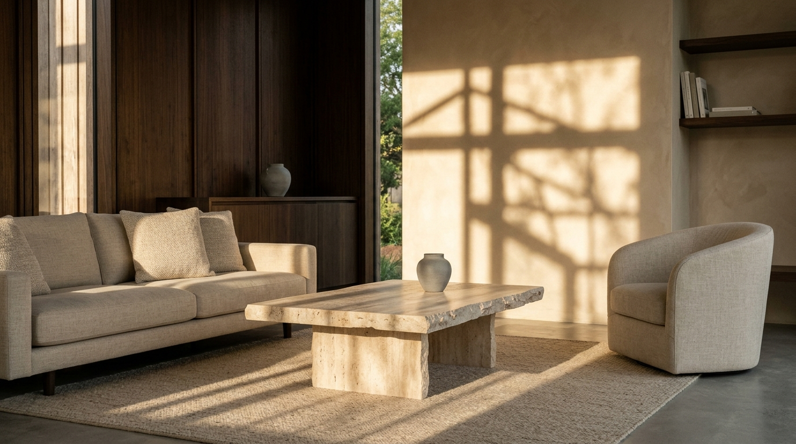

Nhà vườn Thảo Điền
Tổ chức lại khoảng thông tầng và hồ nước trung tâm để giảm nhiệt bức xạ trực tiếp, giữ không khí đối lưu tự nhiên suốt ngày.
TP. Thủ Đức
420 m²
2025
Thực hành kiến trúc nhà ở và không gian văn hóa tại TP. Hồ Chí Minh và Đà Lạt từ năm 2018.
Tốt nghiệp Đại học Kiến trúc TP. HCM, từng tu nghiệp 3 năm tại Kyoto trước khi mở văn phòng riêng.
Chúng tôi chỉ nhận thiết kế tối đa 4 công trình mỗi năm để trực tiếp theo sát từ giai đoạn khảo sát địa hình, nghiên cứu nắng gió cho đến giám sát hoàn thiện từng chi tiết mộc và đá.
Tổ chức lại khoảng thông tầng và hồ nước trung tâm để giảm nhiệt bức xạ trực tiếp, giữ không khí đối lưu tự nhiên suốt ngày.

Kết cấu gỗ thông địa phương kết hợp tường đá chẻ, nương theo độ dốc tự nhiên của sườn đồi mà không san gạt nền đất cũ.

Cải tạo nhà kho cũ thành phòng trưng bày nghệ thuật với giếng trời lọc sáng tự nhiên và hệ tường thạch cao không mối nối.
Khảo sát nắng, gió và vật liệu bản địa trong bán kính 100 km.
Bê tông đổ ván khuôn gỗ giữ nguyên vân thô tự nhiên, giúp điều hòa nhiệt độ và không cần sơn phủ lại sau nhiều năm.
"Ngôi nhà giữ được sự mát mẻ suốt mùa nắng mà hầu như không phải bật điều hòa vào ban ngày."
Trung bình từ 8 đến 12 tuần cho toàn bộ hồ sơ kiến trúc, kết cấu, điện nước và phối cảnh nội thất.
Chúng tôi phụ trách thiết kế và giám sát tác giả, đồng thời giới thiệu 2–3 nhà thầu uy tín đã từng hợp tác lâu năm.
Gửi thông tin khu đất và mong muốn ban đầu để văn phòng sắp xếp buổi gặp trực tiếp.